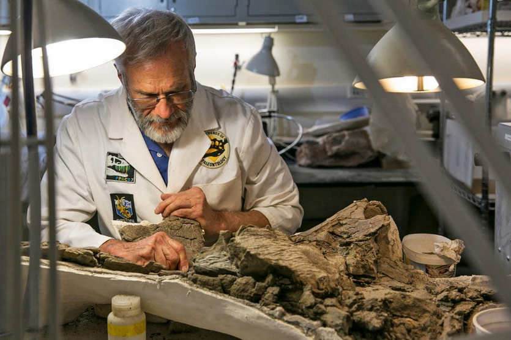

Contacte
Sóc un investigador fascinat amb el origen dels fòssils i vull compartir el coneixement amb els estudiants
- Nom: Dr. Antoni Cretàcia
- Professió: Investigador en paleontologia
- Experiència: 15 anys estudiant fòssils marins
- Classificació una nova espècie ammonit al Mediterrani
- Publicació: "Els primers vertebrats marins i la seva adaptació"
- Direcció una expedició a les muntanyes del Pirineu


Universitat de Barcelona (exemple)
Tornar a la pàgina principal